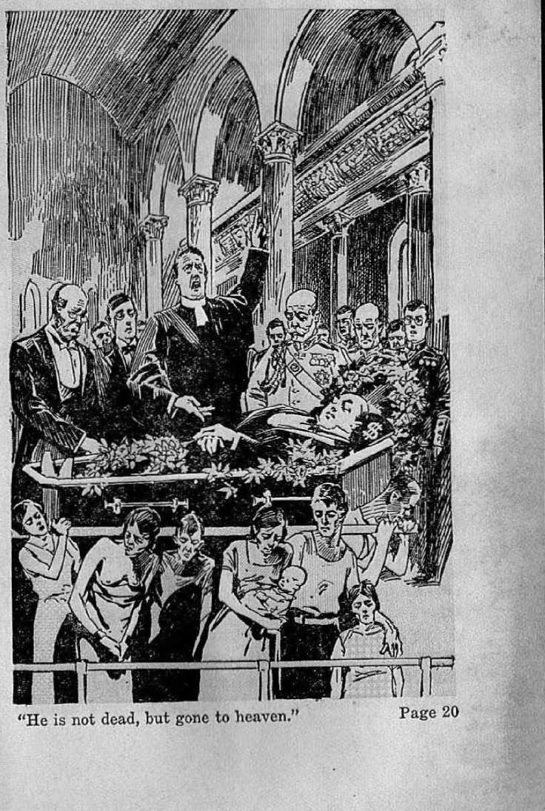

explained in
Seven Bible Treatises
by
J. F. RUTHERFORD
Page
3 Is Hell Hot?
11 Sinners in Purgatory
20 Heaven
29 Rich Man in Hell
37 Thief in Heaven
46 Where Are the Dead ?
54 Funerals -
---------------------------------;----■+
Judge Rutherford’s writings prove that the Bible answers satisfactorily and logically every question of life, here and hereafter.
CorYRlOHTKD 1932 AND I’Uin.IHIlRD BY
W A T 0 II T O W E R
BIBLE AND TRACT SOCIETY International Bible Students Association Brooklyn, N. Y„ U.S.A.
Branch Offices: London, Magdeburg, Paris, Toronto, Strathfield, Cape Town, Berne, Copenhagen, Stockholm, and other cities.
MHMMI
Made in U.S.A.
MEN WHO PROFESS to be teachers of the Bible and who call themselves clergymen teach the people that hell is a red-hot place, the fires of which never go out; that God has provided such place in which to torture the wicked forever, and that the Devil is the chief fireman. This doctrine has turned many honest men against- God and caused them to curse him. If the doctrine were true, then God would be the worst fiend that could possibly exist, and no honest man should serve him. A jailer who would torment his prisoner for one day would be hated by all honest people. The man who would torture a dog with a red-hot iron would be severely punished. If the people believe that God eternally torments men in fire, it is no wonder that many have turned away from him.
On the other hand, if the doctrine is not true, then it is the most cruel and wicked defamation of God’s great name, and works untold harm to the people. I here submit, in brief, the proof from the Bible that the hell-fire doctrine taught by the clergy is wholly false and that Satan the Devil is the originator of such wicked doctrine.
Men of the world look upon a furnace filled with molten iron, or upon a volcano belching forth red-hot Java, and automatically remark: "That is as hot as hell?3 This common remark is the result of the teaching by the clergy to the people for over a long period of time, that hell is a red-hot place. The clergy claim that the Bible supports their teaching that hell is a red-hot place; but every scripture they bring forth to prove it is used out of its proper setting, or is applied literally, when it plainly appears that the language is symbolic. An example is found in Mark 9:47,48: "And if thine eye offend thee, pluck it out; it is bettor for thee Io enter into the kingdom of God with one eye, than, having two eyes, to be cast into hell fire: where their worm dieth not, and the fire is not quenched.”
No one is silly enough to contend that, by gouging out his eye, a man can thereby gain admittance into heaven. It is therefore at once apparent that the language used by Jesus in this text is symbolic. The context shows that Jesus was teaching his disciples concerning the kingdom of God and the importance of laying aside everything that the kingdom might be gained; that they should let nothing interfere with their faithfulness unto God and which would prevent them from getting into the kingdom, even though it was as dear as an eye. The word “hell” used in this text by Jesus is from the Greek word gehenna and is the word used to describe the valley of llinnom adjoining the Avail of Jerusalem. The garbage of that city was thrown over the wall into the valley where a fire was kept burning at all times to destroy the garbage. Some of that garbage would lodge on the wall rocks, and that would be consumed by worms. Hence the symbolic expression. The valley of Hinnom represented, to every Jew, a place and condition of complete destruction, and had no reference to conscious torment. Therefore Jesus said to his disciples, in substance: 'Since yon have been called to the kingdom, let nothing hinder you, even though that thing is as dear to you as your eye; because it is better that you get into the kingdom without that thing than be cast into gehenna, which would mean the loss of everything in complete destruction.’
The basis for the false charge of eternal torment is Satan’s, lie concerning the ‘inherent immortality of souls’. God had told Adam that disobedience to his law would result inhis death. Satan disputed this statement of Jehovah and said to man: "Ye shall not surely die.” It is manifest that either God or Satan did not tell the truth. Jesus said that Satan 'lied and is the father of lies and a murderer from the beginning’. Take away that lie told by Satan and it is at once seen that the eternal torture of man is an impossibility.
There could be no eternal torment of a creature unless that creature were eternally alive and conscious. Immortality means that one cannot die. If a man is dead, then ho is not immortal. In 1 Timothy 6:16 it is plainly stated that God alone is inherently immortal. In Jolin 5: 26 Jesus says that God had promised to give him immortality at. his resurrection. In Homans 2:6,7 the followers of Jesus are admonished to seek immortality. A man does not seek to gain what he already possesses. In I Corinthians 15:53 it is written: '‘This mortal must put on immortality”; and this text is applied exclusively to those who go to heaven. No creature is inherently immortal.
The clergy, in support of Satan’s great lie, say: “It is true that the body of man dies, hut the soul cannot die.” The Scriptures, in Ezekiel 18:4, say: “The soul that sinneth, it shall die.” Psalm 89:48 states that no man can deliver his soul from the, grave. You must choose to believe the words of the clergymen or those of the Lord himself. Thinking people will prefer always to believe the Lord. The Scriptures show that every man is a soul and that no man has a soul, because soul, man and breathing creature all mean the same thing.
The Bible, which is God’s Word of truth, gives the correct answer as to what is I he meaning of the term “hell”. The Old 'Testament, written in the Hebrew language, uses the word sheet, which in English is translated “hell”, or “the grave”. The New Testament uses the Greek word hades, which has - identically the same meaning. In each instance the meaning is the condition of death from which God will awaken or resurrect those who are dead. In the New Testament the Greek word gehenna is also translated “hell” and always means complete destruction from which there is no resurrection.
No one could be in torment unless he were alive and conscious. It is written, in Ecclesiastes 9:5,10, that the living know that the^ shall die, but the dead know not anything; and that there is no work, nor device, knowledge, nor wisdom in the grave or hell. In Psalm 115:17 it is written that the dead go to hell, the grave, and are there in silence and cannot praise the Lord; therefore they cannot suffer while there. In Job 14:13 the record is that Job prayed to God to let him die and go to hell in order that he might escape the torment that was being heaped upon him by his false neighbors. His prayer was that he might die and go into the grave and there remain silent until the resurrection.
The clergy charge that Jehovah God created hell as a place wherein to torture the wicked. If their statement even were true, which it is not, surely God would not send his dearly beloved Son to that place of torture which they call “hell”; If the Scriptures show that Jesus went to hell, that is conclusive proof that hell is not a place of red-hot, eternal torment. It was prophetically written of and concerning Jesus, in Psalm 16:10: <(Thou wilt not leave my soul in hell.” In Acts 2: 30-32 the record is that this prophecy of the Psalms was written concerning Jesus, that he did go to hell, hut that God raised him up out of that condition. If hell wore a place of eternal torture Jesus could not have been resurrected.
Jesus gave a marked distinction between the uses of the words hades and yehcnna, both of which are translated ‘‘heir in the Bible. In Matthew 10:28 he said: "Pear not them which kill the body, but, are not able to kill the soul: but rather fear him which is able to destroy both soul and body in hell.” One man can kill another and thereby send his victim to hades, hell or the grave; and from that condition God can resurrect him. Jesus was telling his disciples, therefore, not to fear what man could do to him, because he could do no more than destroy his body. lie could not destroy his right to live. Then he added that they should fear God, because God has the power to destroy soul and body, that is to say, man’s life and his right to life, in hell, and in this instance Jesus used the word (jchenna, which means complete destruction from which there is no resurrection.
The Pharisees and other members of the clergy willfully persecuted Jesus even though they knew he was the Son of God. To those hypocrites Jesus said, in Matthew 23:33: “Ye serpents, ye generation of vipers! how can ye escape the damnation of hell?” In that text Jesus used the word, gchenna, meaning complete destruction. All the scriptures show that "'hell” means the grave, the tomb, or condition of death, and instead of being red-hot it is cold and silent.
In the earlier English literature the word hell was limited entirely to a dark place. As an example, a man would say: T have put my winter apples in hell’; meaning that he had put his apples in a dark place in the ground to preserve them for food. The statement that hell is a place of consciousness and torture originated with Satan, and is based upon his lie, and is taught entirely by the precepts of men, and not by the Bible.
Jehovah is the God of love. God is entirely consistent as well as loving. He could not be consistent or loving if he should write in his Word that the penalty for sin is death and then, after the crime is committed, consign the perpetrator thereof to eternal torture. God is reasonable and invites his creatures to come and reason with him. It is wholly unreasonable that he would torment any creature. What good could result therefrom? God could have no pleasure in that. It is written, in Psftlm 149: 4, that God takes pleasure only in those who joyfully obey and serve him and do right
The hell-fire doctrine taught by the clergy is afoul defamation of God's name and has turned millions of honest people away from God and into infidelity. If the clergy really believe that men are right and go to eternal torment, then they should be diligent and warn Ilie people, and should do so faithfully whether they receive any salary or not. If they know that Hie. Bible does not support the doctrine of eternal torment in hell, then they should be diligent and tell the people the truth, in order that the people might know what God has in store for them. The truth gives to the people the proper conception of God and brings to them peace of mind concerning themselves and concerning their beloved dead.
No intelligent clergyman today honestly believes (he doctrine of eternal torment, yet they are the men who have instilled that false doctrine into the minds of (ho people, and they do nothing to remove it and let the people get the truth. This is a good and sufficient reason why the people should no longer follow them as teachers of God’s Word. The plain teaching of the Bible is that all good persons at death go to hell and that all bad persons at death go to hell, and that "heli” means the grave, t he tomb, the condition of death. The Scriptures further unequivocally teach that the Lord will give life, liberty and peace to all of those who love and serve him.
I urge upon the people the great necessity of gaining a correct knowledge of the Bible, for the reason that the truth as contained in the Bible brings contentment and enables the people to bear their burdens now and to look with hope to the future, seeing what God will do to completely relieve them and bless them, Satan through his agencies is diligent to keep the people ignorant of the Bible, and for this reason there is much opposition to the people’s having an opportunity to read the books that are published and distributed, which give an explanation of the Bible. I strongly advise that you take your Bible and these books that enable you to locate the text in the Bible, and sit down with your family at home.
rT^HE SCRIPTURES, at Psalm 51:5 and Romans 5:12, state that by reason of Adam’s sin all have been born sinners. All children are sinners by inheritance. It will be admitted by everyone that by far the great majority of mankind have died in sin. What is the state of those who have thus died? Are any of them in purgatory? and, if so, what is the prospect of their escape therefrom?
Purgatory is supposed to be a place halfway between heaven and. earth, where the sinners undergo an indefinite period of punishment and purgation with the hope of some day passing on to heaven. One of the best-known Catholic authorities of America, Archbishop James Cardinal Gibbons, in his book published in 1904 under the title The Faith of Our Fathers, at page 205 says: "The Catholic Church (('aches that, besides a place of eternal torments I'or the wicked and of everlasting rest for Hit* righteous, there exists in the next life a middle state of temporary punishment, allotted for those who have died in venial sin, or who have not, satisfied the justice of God for sins already forgiven. She also teaches us that, although the souls consigned to this intermediate state, commonly called purgatory, cannot help themselves, they may be aided by the suffrages of the faithful on earth. The existence of purgatory naturally implies the correlative dogma—the utility of praying for the dead—for the souls consigned to this middle state have not reached the term of their journey. They are still exiles from heaven and fit subjects for Divine clemency.”
Without a question of doubt millions of honest persons have been induced to believe (and they have believed) that their dead relatives are in purgatory, conscious and suffering, and that they could be aided by the prayers of men on earth. Believing such they have contributed money to clergymen to say prayers in behalf of the dead, with the hope that some good might result therefrom. If this purgatorial doctrine is false, that moans that millions of persons have been wrongfully induced to give up their hard-earned money upon the representation that their sacrifice would result in good to their dead. Therein an injustice has been done to the living. If the doctrine is false, then a far greater wrong has been done in this, that it is made to appear that Jehovah God has prepared this place called "purgatory” wherein he punishes sinners, and that he has arranged that imperfect men may be employed to aid in getting the sinners out. God is therefore made to appear as without love and affection and as permitting his Word to be used for pecuniary profit or gain to imperfect creatures. Such makes him appear as dishonorable and subject to reproach.
It is easy to be seen that many persons were turned away from God if they believed the purgatorial theory. Satan’s chief purpose is and ever has been to turn everybody away from the worship of the true God. A wrong motive for putting forth the doctrine of purgatory is therefore evident and shows why this false doctrine has been forced upon the people. If the doctrine of purgatory were true and the sinners were there undergoing conscious punishment, is it not reasonable to expect that some Scriptural proof thereof could be found in the Bible?
Without hesitation I emphatically state that there is not one text of the Bible that oven tends to support the theory of sinners in purgatory, and that the doctrine is as false as Satan himself. In order for one to be in purgatory, suffering conscious punishment, he must be alive and conscious, I submit here a few scriplures bearing upon the point for your consideration: “For the living know that they shall die; but the dead know not anything, neither have they any more a reward; for the memory of them is forgotten. Whatsoever thy hand lindeth to do, do it with thy might; for there is no work, nor device, nor knowledge, nor wisdom, in the grave, whither thou goest.” (Ecclesiastes 9:5,10) “For in death there is no remembrance of thee: in the grave who shall give thee thanks?” (Psalm 6: 5) “Like sheep they are laid in the grave; death shall feed on them; and Ihe upright shall have dominion over them in the morning; and their beauty shall consume in the grave from their dwelling” (Psalm 49:14) “The dead praise not the Lord, neither any that go down into silence.” —Psalm 115:17.
These scriptures prove, beyond any doubt, that when a man dies he knows not anything; that in death he has no knowledge, ho docs not work, he has no memory, and he is unconscious and in silence and completely out of existence.
What part of man could possibly go to purgatory? The only proper way to am wer that question is to learn bow man is made. In Genesis 2:7 it is written: “The Lord God formed man of tile dust of the ground, and breathed into his nostrils the breath of life; and man became A living soul?’ This scripture does not say that God gave man a soul, and that the soul is immortal and cannot die. It does say that the breathing, moving creature called a man is a soul. All breathing creatures are properly called souls. In Genesis 1:20, margin, the animal creation is referred to as souls, and this long before the creation of man. In Numbers 31:28 the cattle in the fields are called souls, which they are.
When a sinner dies, it is the soul that dies; and in proof of this it is written, in Ezekiel 18: 4: “The soul that sinneth, it shall die.” A scripture that is often improperly applied is that of Ecclesiastes 1.2: 7, which reads: “Then shall the dust return to the earth as it was; and the spirit shall return unto God who gave it.”
God created man out of the dust of the earth, and when he dies the body returns to the dust. God put the breath of life in man the same as in all other living creatures. The word translated “breath” is the same word translated “spirit” or “wind”. It is the same word from which the word “pneumatic [tire]” is derived. Breath or spirit really means that which causes the blood to circulate and animates the body; and when it is taken away, death results. Breath was given to the man in the beginning and represents his right to existence; and since that belongs to God, the right returns to God at death.
In support of this point consider the Scriptural record at Ecclesiastes 3:19-21: “For that which befalleth the sons of men befalleth boasts; even one thing befalleth them; as the one dieth, so dieth the other; yea, they have all one breath; so that a man hath no preeminence above a beast: for all is vanity. All go unto one place; all are of the dust, and all turn to dust again. Who knoweth the spirit of man that gocth upward, and the spirit of the beast that goeth downward to the earth?” Both the body and breath of life, or spirit, are required to constitute a soul or living creature. Neither body nor spirit of life goes to purgatory to be cleaned up.
When a sinner dies he goes into the grave, which place is properly called “hell”. It is the condition of darkness and silence. He is unconscious, and would remain out of exist cnee forever if God had not made some provision for his recovery. The benefit that shall come to him does not come by reason of the prayers of any man on earth that might be made for the dead. Let no one be deceived upon this point, but take the plain teachings of the Bible therefor. Because of the sin of the first man all have been born sinners and, without divine aid, would die and remain forever in the grave. Long ago God made a promise which is recorded in Hosea 13:14 in these words: “I will ransom them from the power of the grave; I will redeem them from death; 0 death, I will be thy plagues; 0 grave, I will be thy destruction.”
In due time and in fulfilment of these promises Jesus came to earth. He said (Matthew 20: 28) that he came for the very purpose of giving his life a ransom for man; and, in John 10:10, he stated that the result would be that the people would have an opportunity to get life. In John 3:16 it is stated that God sent Jesus thus to give the ransom price,, that those who believed should live and not perish. That is proof that all would perish except for the loving-kindness of J-ehovah; and one who perishes is not in purgatory. At the time that Jesus died to provide the ransom price men had been going into death for many centuries. Not one of them had gone to heaven, because Jesus so said. All of them were in the grave, waiting in silence until they shall be brought out of death. In John 5:25 Jesus says: fThe hour is coming in which the dead shal! hear the voice of the Son of God, and then they shall live.’ That proves that they are not alive and in purgatory. Then Jesus adds: “Marvel not at this: for the hour is coming, in the which all that are in the graves shall hear his voice, and shall come forth; they that have done good, unto the resurrection of life; and they that have done evil, unto the resurrection [by judgment, Greek
That means that those who have died in sin and without a knowledge of God's provision for them will have their trial on earth. No man can be tried without having some knowledge. For this reason all in their graves will he brought forth and given a knowledge of the truth and an opportunity to obey Christ and live. Therefore it is written, in 1 Timothy 2: 3-G: ‘'For this is good and acceptable in the sight of God our Saviour; who will have all men to be saved, and to come unto the knowledge of the truth. For there is one God, and one mediator between God and men, the man Christ Jesus: who gave himself a ransom for all, to be testified in due time.”
If sinners are in purgatory and on their way to heaven, then the ransom of Jesus Christ can avail them nothing. The doctrine of purgatory makes null and void the great ransom sacrifice, and that is proof that purgatory is a false doctrine. The Scriptures plainly state that there is no other way given whereby man can be saved except by the blood of Christ. It is Jesus’ blood that makes satisfaction for the sins of man. There is no scripture in the Bible that warrants anyone in believing that man can pray and his prayer result in the removing of sins from the sinner. There is no scripture that authorizes prayers to be made for the dead.
In Romans 5:18 it is written: “Therefore, as "by the offence of one judgment came upon all men to condemnation ; even so by the righteousness of one the free gift came upon all men unto justification of life.” And in Romans 6: 23 it is stated that, life is a gift of God through Jesus Christ. These scriptures prove that in no other way can men get life. No man could receive a gift without first having some knowledge of the offer of the gift to be given. If he rejects the offer there is no gift. Consequently no man can receive the benefit of the ransom sacrifice aud the forgiveness of sins until that person first has a knowledge of God’s provision made for him. That is the reason why God has given his promise that both the just and the unjust shall be brought back from the grave and given a knowledge of the truth that they may believe and obey and receive the gift of life.
Do not be satisfied with the mere statement of man, but take your Bible and read what the Lord says and thus learn the truth. Books which enable you to find these proof texts in the Bible, and to understand their meaning, are brought to you from time to time by those who love the Lord. Avail yourselves of these and equip yourselves with the Scriptural teachings and thus learn the truth arid be made glad.
r-pHE RECORD OF JEHOVATI GOD in J Isaiah 66:1 says: “The heaven is my throne, and the earth is my footstool.” He is the great Spirit whom no man has seen or ever can see, because man is human and the earth is his home. The organism of man is flesh, and the life of man is in the blood. The Bible says that flesh and blood cannot inherit the kingdom of heaven.
"Organized Christianity” teaches that all the good go to heaven at death. Wishing to appear fair towards all denominations the clergymen say: "It matters little as to which church you belong to, just so you are faithful to one. We are all traveling different roads, hut to the same goal, which is heaven.” That teaching is wholly untrue and based upon the false doctrine of the inherent immortality of all souls. The theory is that all the good go to heaven, that a certain class go to purgatory and may later get to heaven, and that all the willfully wicked go to eternal torment. The teaching is misleading, erroneous, and injurious to the people. The man of good reputation, successful in business, who has rendered some good service in politics and has done some acts of charity for the poor, dies. At the funeral the clergyman says: “This
man was a good man; he left his mark in the world; he is not dead, but gone to heaven.” Many hear the clergyman and believe his statement. His claim, however, finds no support in the Bible, and no one is warranted in accepting it.
Abel, Enoch, Noah, Abraham and all the prophets of God were “good” men, as that word is generally understood. They served God and received his approval, and all died; but not one of them went to heaven or ever can be there. Many centuries after these men had died Jesus, in John 3 :13, said: “No man hath ascended up to heaven.” In Acts 2: 34 it is specifically stated that David, although a man after God’s own heart, did not ascend into heaven. John the Baptist was the greatest of all the prophets of God, and of him Jesus said, in Matthew 11:11, that the very least in the kingdom of heaven is greater than John. It is clear that something else besides being counted good is required before one can go to heaven. In John 3:3 Jesus said that except a man be born again he cannot even see heaven. No human creature can go to heaven, because it is the habitation of spirits.
The wicked influence of Satan induced Adam to sin, and this resulted in his death. God then gave his word of promise that he would produce a “seed” that would destroy Satan and his organization and restore mankind. It is stated, in Galatians 3:16, that the promised “seed” is Christ, composed of Jesus Christ and 144,000 members of his body. Such alone will constitute the kingdom of heaven class.
In 1 Peter 3:18 the record shows that Jesus became a man and, as such, died that he might provide the ransom price; that then he was raised out of death a spirit creature. In Colos-sians 1:18,19, of and concerning Jesus it is written: “He is the head of the body, the church: who is the beginning, the firstborn from the dead; that in all things he might have the preeminence.” In 2 Timothy 1:10 the statement is made that Jesus, by reason of his resurrection, opened the way, making it possible for other men thereafter to be changed from human to spirit creatures and taken to heaven. Never before that time was it possible for any man to go to heaven. Jesus spoke with authority and pointed out the way that a man must go in order to reach heaven. He says, in Matthew 16:24: “If any man will come after me, let him deny himself, and take up his cross, and follow me.” That means that only those can go to heaven who follow in the footsteps of Jesus. No man can take this first step without first having faith, which faith is based upon the knowledge of God’s purposes. Ho must believe in God and in Christ Jesus, and then intelligently consecrate himself by agreeing to do the will of God. His faith must be based upon the Word of God and nothing else. To say that a man can bo-lieve anything and still go to heaven is worse than erroneous.
If a man believes in God and in Christ as his Redeemer, and then agrees to do God’s will, he takes the first step towards following Jesus in the heavenly way. If it then pleases him to do so, God accepts his consecration and brings forth that man and acknowledges him as his son, which means the begetting. In James 1:18 it is written : “Of his own will begat he us with the word of truth, that we should be a kind of firstfruits of his creatures.”
Those who are thus begotten receive God’s invitation or call to the kingdom, as is stated in Ephesians 4: 4. Those who respond to that call are brought into the covenant with God for the . kingdom of heaven. From that time forward such called ones must be faithful in doing the will of God. Many who are called are not faithful; therefore Jesus said: “Many are called, but few are chosen.” Furthermore Jesus, in Matthew 7: 21, says: “Not every one that saith unto me, Lord, Lord, shall enter into the kingdom of heaven ; but he that doeth the will of my Father which is in heaven.” It would be far safer to be governed by the words of Jesus than to take the unsupported statement of some clergyman to be your guide.
All who go to heaven must overcome the world. “The world” means the organization of the peoples of earth under the supervision of an invisible overlord, which is now the Devil. To overcome the world one must take his stand unequivocally on the side of God. In James 4:4 it is written that a man who is the friend of this world is God’s enemy. The reason is that God will have no divided devotion. Those he takes to heaven must he entirely devoted to him. Chastity, morality and honesty are not sufficient to open the way to heaven for anyone. One must intelligently and faithfully serve God by being his faithful and true servant.
The clergymen claim that babes go to heaven, and in support of their erroneous claim they cite the words of Jesus in Matthew 19:14, which are: "Suffer little children, and forbid them not, to come unto me, for of such is the kingdom of heaven.” Jesus did not say that babes are in heaven. The erroneous conclusion reached by the clergymen is due to their ignoring the context and using the words of Jesus outside of their proper setting. The context shows that the disciples of Jesus were disputing amongst themselves as to which one would be the greatest in the kingdom of heaven. The record is that Jesus called a little child to him and, pointing to the child, said Io his disciples: 'Of such is the kingdom of heaven; and except you change your course of action and become as this little child, you cannot he in heaven ; and the one who thus does is the greatest in heaven.’ Jesus used the child as an illustrat ion to teach his disciples a lesson. A child is trustful, and obedient to his parent. The child of God must be trustful of God and fully obedient to his commandments.
Everybody recognizes the fact that a babe has not sufficient mental capacity to make a contract, No one can even start in the heavenly way until first he makes a contract or covenant to do God’s will. That contract must be preceded by and based upon a knowledge of the truth, and that must be followed by faithfulness to God and to Christ. These things a babe cannot do. The Scriptures show that no babes will ever be in heaven. The everlasting home of babes will be on the earth, and the earth will be made a blessed place for them; and they will bo restored to perfection.
The clergymen teach that sinners are in purgatory and that these sinners can be aided while in purgatory by the prayers of preachers and later be transferred to heaven. Such teaching is wholly false. No man can go to heaven unless he first devotes himself to God while alive on earth and then proves himself faithful unto God from that time forward until his death. Those who will be taken to heaven must die and must be faithful, at death, unto God and unto Christ. Iii proof of this it is written, in 2 Timothy 2:11,12: fTt is a faithful saying: For if we be dead with him, we shall also live with him; if we suffer, we shall also reign with him; if we deny him, he also will deny us.”
The sufferings of Christ Jesus were due to the reproaches and persecutions brought upon him because of his faithfulness to God and to his covenant. The men who were generally responsible for such opposition and persecution were the clergymen of that day, and Jesus told them that they did so because of the influence of their father (he Devil, who is the god of this wicked world. In John, the fifteenth chapter, Jesus said to his followers, in substance: T am your Master and have chosen you out of the world, and for this reason you are hated by the men of the world. In the world you shall have tribulation; but be of good cheer, I have overcome the world? All who go to heaven must take this course. Babes and sinners do not take this course. In 2 Timothy 3 :11,12 Paul wrote: “Persecutions [and] afflictions . . . came unto me . . .: but out of them all the Lord delivered me. Yea, and all that will live godly in Christ Jesus shall suffer persecution.”
Furthermore, it is shown by the Scriptures that those who will be of the heavenly kingdom class must be God’s faithful witnesses and, as such, must give testimony to the truth while they are on the earth. In Revelation 12:17 it is written that those who faithfully obey God’s commandments and give such testimony are the special targets of the Devil. Today there are more than 150,000 clergymen in the United States, not a single one of whom is teaching the people of and concerning God’s kingdom for the relief and blessing and restoration of the peoples on earth. There is a small company of men and women who use their spare time in going from house to house, especially Sundays, to inform the people of God’s kingdom, and this they do by showing them the printed message, such as contained in the book Government and other books. They are the witnesses of God and are constantly being persecuted by the clergymen. It is expected that this persecution and opposition will continue and that only those who faithfully go on in spite of it will have the Lord’s favor of being taken to heaven. In Matthew 24:13 Jesus said to his followers: 'Tie that shall endure unto the end, the same shall be saved.”
Those who become members of the heavenly kingdom class will in the resurrection be changed from human to spirit creatures and then shall see the Lord and be granted the great blessing of life divine. To such, and to such only, who thus continue faithful Jesus, in Revelation 2:10, says: “Be thou faithful unto death, and I will give thee a crown of life.”
The clergy have told you that the man who joins any church, pays his dues regularly, and lives an honest and decent life, even though he is active in the political and financial affairs of this world, yet when he dies he goes straight to heaven. The Scriptures show that Ilie clergy have not told you the truth. The belief of a falsehood, even though it brings comfort for a time, results in no lasting good to anyone. The clergy have repeatedly told you that babes at death have gone to heaven. The Scriptures show that they have not told you the truth concerning this. You will find real consolation by learning the truth of God’s Word. The Bible proves that only a few go to heaven, while the mass of mankind may hope for life everlasting on the earth if they are obedient to God’s perfect law.
JUSTICE IS THE FOUNDATION of God’s throne. Any doctrine, therefore, that violates justice and easts reproach upon God’s name should be carefully scrutinized before heed is given to it. The doctrine of eternal torment does violate justice and reproaches God’s name. The clergy have relied upon the scripture concerning the rich man in hell and the poor man in Abraham’s bosom to prove the doctrine of eternal torment. That scripture is a parable and does not teach eternal torment of the wicked. The scripture is found in Luke 16: 19-31 and should be carefully read. I quote verses 19-23 as follows: “There was a certain rich man, which was clothed in purple and fine linen, and fared sumptuously every day; and there was a certain beggar named Lazarus, which was laid at his gate, full of sores, and desiring to be fed with the crumbs' which fell from the rich man’s table; moreover the dogs came and licked his sores. And it came to pass, that the beggar died, and was carried by the angels into Abraham’s bosom: the rich man also died, and was buried; and in hell he lift up his eyes, being in torments, and seeth AbraMm afar off, and Lazarus in his bosom.”
A parable is a statement in symbolical language, the purpose of which is to teach a lesson by way of illustration. The clergymen insist that this scripture is not a parable but is a literal statement of fact. To apply the scripture literally makes it absurd, as you will now see. The record is that one man was rich, wore good clothes, and had plenty to eat, and he died and went to hell. No other thing appears in the record against him. To be rich is surely no cause for being eternally tormented. Let a rich man die in the world and you could not get a clergyman to appear at his funeral and say that this man has gone to hell because he was rich, wore good clothes and had plenty to oat.
The other man was a pauper dothod in rags, covered with sores, and lay at the rich man’s gate begging. Ide died and was carried away by the angels into Abraham’s bosom; and the clergy say that means that he was taken by the
angels to heaven. Surely no one could reasonably believe that God takes mon to heaven merely because they are poor and covered with sores and lie at someone’s gate to bog. If that were the rule, then very Ivw who claim that they are going to heaven would ever get there. You seldom see a clergyman in the miserable condition of the pauper.
The scripture further states that the rich man died and afterwards lifted up his eyes. Whoever saw a dead man lift up his eyes? The scripture tells of the rich man’s being in torment and crying out for the poor man to come to him with one drop of water and cool his tongue. If the rich man were in a hell of torment, and it were as hot as the clergymen claim, then it would be impossible for the other man to get within a hundred yards of him with even a bucket of water#; much less a drop. The literal interpretation of this scripture text is shocking to reason and justice and is worse than absurd.
Wien we get the proper setting of the text it is easy to be seen that it is a parable, and what it means. Jesus spoke these words to the Pharisees who were the clergy of that day. They were the leaders in Israel. Israel was the only nation with which God ever made a covenant, and to that people ho said, in Exodus 19:5,6: "Now therefore, if ye will obey my voice indeed, and keep my covenant, then ye shall be a peculiar treasure unto me above all people; for all the earth is mine. And ye shall be unto me a kingdom of priests, and an holy nation.” The nation of Israel, therefore, Jesus pictured in this parable as the rich man. His garments of purple and fine linen were symbols of royalty and favor enjoyed from God.
All other nations aside from the Israelites were called Gentiles and were outside of God's favor, and are therefore pictured by Jesus under the symbol of the pauper. In the parable the poor man Lazarus pictures all these nations. The Israelites frequently referred to the Gentiles as dogs, for the purpose of showing their lack of God's favor. Jesus was born a Jew, and of him it is written, in John 1:11: “He came unto his own, and his own received him not.”
It was the Pharisaical clergy that led the revolt against Jesus. Therefore the parable is a prophetic statement of Jesus that the day was not far distant when the rich man, to wit, the nation of Israel, should lose the favor of God; and the poor Gentile nations would receive that favor.
On the occasion of the sacrifice of Isaac God used Abraham to represent Him, and in this parable Abraham pictures God; and his bosom represents God’s favor which would come to the Gentiles when the Israelites were cast away. With these facts before you picture in mind Jesus speaking to the Pharisees. He had told them that because of their unfaithfulness the kingdom of God would be taken away from them and given to a people that would honor his word and name. He spoke this prophecy in symbolic language concerning the rich man and the pauper, that there might forever stand a record of God’s warning to the clergy of that day. A prophecy can bo understood by any person after it is fulfilled or in course of fulfilment. When the physical, facts appear which fulfil the prophecy, yon may know that such constitute the fulfilment thereof. The facts fulfilling the parable are these:
Shortly after Jesus thus spoke he was put to death. A few years thereafter the nation of Israel was completely destroyed, but the people thereof were scattered amongst other nations of the earth. The rich man, that is to say, the nation of Israel, thus died and went to hell, which means oblivion or condition of nonexistence, as a nation. The people of Israel have since been in torment because of the great amount of injustice heaped upon them by other nations and peoples. The facts, therefore, exactly fit the parable concerning the rich man’s being in torment.
The Gentile nations pictured by the pauper then came into the favor of God. That passing is represented by the death of the pauper, because his condition ms a pauper eo.asOd to exist. With Cornelius the Geiililos hogan to receive God’s favor, and the followers of Christ since have been chiefly from amongst the Gentiles. This was clearly foretold in the parable by the pauper’s being carried to Abraham’s bosom, meaning God’s favor. Acts 13:46 is a proof text of this change, wherein it is written:
“It was necessary that the word of God should first have been spoken to you [Israelites], but seeing ye put it [away] from jrou, and judge yourselves unworthy of everlasting life, lo, we turn to the Gentiles.”
The parable pictures the rich man as the nation of Israel crying to Abraham to send Lazarus to bring him the drop of water. The facts are that for many centuries the Israelites have begged and prayed that God would send them some relief through the Gentile nations of the earth. By this parable Jesus was foretelling to the Pharisees exactly this condition. The drop of water in the parable pictures the small measure of truth that would help refresh the Israelites in their distress. Jesus foretold that this prayer of the Israelites would be answered in this manner: ‘When you were in God’s favor you had all the good things and every opportunity to be the peculiar treasure of God; and these you rejected. The Gentiles had nothing, but were in great want and distress. Now the favor of God is turned to the Gentiles, and they have comfort and you must suffer.’ The historical facts coming to pass since exactly fit the prophecy. The Israelites long had the favor of God to the exclusion of all others, but from and after A.D. 73 they have suffered continuously.
In the parable Jesus speaks of the great gulf between the rich man and the pauper. What could that gulf represent? The Israelites looked for the coming of a mighty ruler that would rule the whole earth. When Jesus came to them and offered himself as their King, the clergy rejected him and influenced the nation to do likewise. The Gent iles that have followed Christ have accepted him as God's anointed King who shall rule the world in righteousness. The Israelites, the parable shows, would refuse to accept Christ, and the Gentiles would not become Jews; therefore this caused a great gulf or dividing space between them. Jesus was there telling the Israelites in symbol substantially this: ‘The fact that you have rejected God’s provision for you, and the fact that God’s favor has turned to the Gentiles, makes a great gulf between you.’
At the time Jesus spoke this parable the nation of Israel was divided, part being under the tribe of Judah, and I he other under the, tribe of Ephraim. Many of their brethren wore still in Babylon. The parable applies specifically to those in Palestine, mid Ilie words concerning the five brethren evidently wore introduced by the Lord to show Hurl all Hie. tribes of Israel would lose the favor of God. Tin' words of the parable then show that if would be useless for the Gentiles to bring the message of God to the Israelites, because the Israelites had Moses and the prophets, and these they had rejected; and they would not believe what God had to say to them, even though one came from the “dead” Gentile nations. The facts show that the prophecy of Jesus in this respect has been exactly fulfilled; The leaders of Israel have rejected Moses and the prophets who wrote concerning Jesus Christ as the King, and they have not heard the message concerning Christ Jesus as this has been presented to them by the Gentiles.
This parable never had any reference whatsoever to the punishment of the wicked. Long ago Satan seized upon it to reproach God and to turn men away from him. The clergy have used this parable to frighten many people, especially the ignorant, and thereby induce them to join their church organizations. At the same time they have reproached Christ and God’s great name by thus falsely applying this scripture and have thereby caused millions of honest men to reject God and the Bible. Many men have reasoned like this: If God is such as described by the clergy, and this picture of the rich man and the pauper is from him, as the clergy tell us, he could not be a just and loving God, and we will not serve him.
The prophetic parable, spoken by Jesus, has its fulfilment. Instead of teaching that God is a fiend and has prepared a place wherein he will eternally torment mon, it shows how gracious God has been to teach the people, by the words of Jesus, mid warn them of what was coming to pass. Now the parable can be understood by both Israel and the Gentiles. Other scriptures show that God’s favor will return to Israel and the obedient of Israel will be restored. The due limo is now at hand when all persons, both Israelites and Gentiles, shall have an opportunity to know the truth. Those who heed the truth and obey the Lord shall be restored to life, and Ilion with gladness they will worship and servo Jehovah God. As the light shines upon the Word of God, illuminating the truth in the mind of the earnest student, the goodness and loving-kindness of our God appears more wonderful and we delight to praise his name and to tell others about Him.
ALMOST ALL MLN have some sense of justice, ami they turn away from that which is unjust. Any doet l ine that shows God to be unjust causes honest men to have little or no regard for him. If a man can be a thief all his days, work great wrong to many, and then at the very hour of his death repent and be immediately taken into lieaven, that puts a premium on wrongdoing. Honest men balk at believing that God has any such arrangement. For many years the clergy have taught this very strange and unrighteous doctrine and claimed that the Bible supports them therein. The Scriptural text upon which they base their conclusion is found in Luke 23: 39-43, concerning the two thieves between whom Jesus was crucified, and from which I quote the following: “And one of the malefactors which were hanged railed on him, saying, If thou be Christ, save thyself and us. But the other answering, rebuked him, saying, Dost not thou fear God, seeing thou art in the same condemnation? And we indeed justly; for we receive the due reward of our deeds: but this man hath done nothing amiss. And he said unto Jesus, Lord, remember me when thou coraest into thy kingdom. And Jesus said unto him, Verily I say unto thee, To day shait thou be with me in paradise.”
The people have been induced to believe that this text proves that at death a man goes immediately to heaven or hell; that he may be wicked and commit all manner of crimes up to the very hour of his death, and that if, upon bis deathbed, he repents and confesses before some clergyman, he may be absolved of all sin and taken at once to heaven. Other mon who have tried to deal honestly with their neighbors and do as nearly right as possible, and then hearing such interpretation put upon the scripture, have said in substance: “If that is the way God gets men into heaven, I do not care to go there.’1 The result has been Hint for this reason many have rejected the Bible, reproached God, and turned away from Him. Such is another subtle scheme of the enemy Satan to keep the people in darkness.
I now submit the proof that the thiol’ mentioned in this scripture did not go to heaven that day, and furthermore that he will never be in heaven, and also that deathbed repentance of thieves or others is no passport into heaven at any time. Note that the clergymen contend that the thief, on that day that he died, went immediately to heaven, because Jesus used the words “to day shall thou bo with me in paradise”. If Jesus did not go to heaven that day, then there must be something wrong with the interpretation that has been placed upon this scripture.
The Bible record is that Jesu^was dead and in the grave for three days; that (»n the third day he was raised out of death; mid that after he was raised ho slated to Mnry, ns recorded in John 20:17: "Touch mo not; for I am not yet ascended to my Father; but co Io my brethren, and say unto them, 1 ascend unto my Father, and your Father; mid Io my God, and your God” .
Forty days thereafter Jesus appeared to his disciples on the Mount of Olivos mid gave instructions to them and then, as stated in Acts 1: 6-11, he was taken up or ascended into heaven, The proof is therefore conclusive that Jesus did not ascend to heaven until forty-three days after his crucifixion. If the thief was taken to heaven on the day of his death, then lie went there forty-three days in advance of Jesus. Such a thing would be impossible, because it is written, in Colossians 1:18, that Jesus was the first raised from the dead and was given preeminence over all. In 2 Timothy 1:10 it is recorded that by the appearing of Jesus in heaven he brought life and immortality to light. Jesus' must be the first, and the thief could not then get life, much less appear in paradise, before the ascension of Jesus into heaven.
The eleven faithful disciples that stood faithfully and firmly for Jesus during all of his trials wore taken into the covenant for the kingdom. They were faithful over a long period of years and they had the positive testimony from Jesus that they could not get to heaven until his second coming. In John, chapter fourteen, he said to them that he was going away to prepare a place for them, and would come and receive them again to himself. In Matthew 7: 21 Jesus said: 'Not every one that saith, Lord, Lord, shall enter into heaven, but he that doeth the will of my Father/ Paul the faithful apostle, just preceding his death, wrote, in 2 Timothy 4:7,8, that he had been faithful, but that he could not go to heaven until I lie second coming of the Lord Jesus. In that same epistle it is written that the judgment of I he living and the dead shall take place at the second coming of the Lord Jesus. Il is therefore wholly unreasonable to conclude that the Lord would make a more liberal rule for a thief, and take him to heaven the same day I hat he died, and require faithful men to wait centuries.
The Lord laid down the rule by which all must be governed who will ever bo in heaven. In Matthew 16:24 he said: *If a man will be my disciple, he must deny himself, lake up his cross, and follow me.’ In John, chapter fifteen, he stated that all who would be followers of him must be witnesses to the truth, and must suffer persecution because of their faithfulness. The thief had not taken even one of these steps, and no one upon his deathbed could possibly fulfil any of these conditions. Furthermore, Jesus said that before anyone could get to heaven he must be an pvcrcomer of the world, That was an impossibility for tho thief; mid it would be impossible for anyone on his deathbed.
In 2 Timothy 2:111 he rule is explicitly stated thus: ‘Tt is a faithful saying: For if we be dead with him, we shall also live with him,” 'I'he clergymen’s theory of the thief's going to heaven tho day he died is based upon Ilie false doctrine of the inherent inti mortality of the soul. All the scriptures show that I he thief died and wont to hell, "which is the grave, and that he is to this day in the grave, and that he will be awakened out of death in the future and during the reign of Christ.
What the Scriptures really teach concerning The thief in paradise* is this: For more than three years before his crucifixion Jesus had been preaching to the Jews concerning the kingdom of God. lie had told them that God had sent him to tell this message and that in due time he will establish the long-promised kingdom. Practically everybody in Palestine knew that Jesus claimed to be the King. The men that accused him and persecuted him and were responsible for his mock trial and his wicked conviction were the clergy of that day, and they knot? he was the King. Pilate offered to release Jesus, but the clergy insisted that instead he should release Barabbas, a notorious criminal, and that Jesus should be crucified. Then they hanged Jesus between two thieves, and a sign was written and put over the tree, in these words: “This is Jesus the King of the Jews.” The clergy stood by and mocked Jesus and incited the mob, including the thieves, to do the same thing. One of the thieves, seeing all of this, concluded that Jesus was an unusual man, that he was entirely innocent, and that he was in fact the promised King. Therefore this thief said to him: “Lord, remember me when thou comest into thy kingdom.” In response to those kind words from a thief, so much in conlrasl to those spoken by the clergy, Jesus said Io Ilie thief: “I say unto thee today ; hall Ilion he with me in paradise.” Jesus did not May, You shall go to heaven this very day, nor even Io pare dise this day. Jesus made Ihe stftteinenl that day, at that time, while he was on (lie tree. In substance this is what Jesus said Io Ihe Ihief: ‘You have shown your faith in me nr Ihe King, and now at this day I give you my word of promise that you shall be in paradise.’ Not that he should go there that day, hut the promise was made that day.
The word “paradise” means a garden or ICden and has reference to the restored earth. The work of making this earth a glorious place will be done by Christ Jesus during his reign. All obedient ones of mankind will I hen have an op portunity to be restored and live forever in paradise on the earth. The promise of Jesus to the thief was: ‘I say to thee this day shall thou be with me in paradise?’ The only construction that can properly be put upon Ihe words of Je sus is this: That Ihe thief will he awakened out of death and given the opportunity to he in paradise.
On the day that Ihe thief died he went to hell, or the grave, and is still there. When Ihe kingdom of Christ Jesus is in full sway all Ihe dead in their graves will he brought forth, including the thief. All will then be given a knowledge of the truth, and those who obey the righteous Lord will be restored to everlasting life in the paradise of the earth. That is yet future. Upon the very day of the crucifixion of Jesus he made the promise.
How has this wrongful construction of the text been so long believed by the people? Look at the text in your Bible and you will observe a comma immediately following the word “thee” and the emphasis on the word “today”. Such punctuation marks were unknown in the day of Jesus. They first came into use in the sixteenth century. The translators put the comma in the wrong place. Now take away the comma from its present place and read the text without punctuation by putting the emphasis on the word “today” and see how differently it sounds. “I say unto thee today Shalt thou be with me in paradise?” This he will be, provided he is obedient unto the Lord. The statement of Jesus is not arbitrary, and clearly it must be inferred that the thief would have an opportunity to be in paradise and would be there if obedient.
When properly understood the language of Jesus to the thief completely explodes the false theories of deathbed repentance and the immortality of the soul. The texts which the clergy have worked overtime to prove their false claims prove exactly contrary thereto. In 1 Corinthians 6:10 it is written: ‘No thieves shall inherit the kingdom of God.’ That is further and conclusive proof that Ilie thief will never be in heaven, and that I lie clergy are fid; r wit nesses.
The coming of (lodh Kingdom in n truth of the greatest importance, ,)c:.ii:i urged upon hitdisciples to always pray: "Thy kin:-dom cmne. Thy will be done in enrlh, as il i. in heaven,” By fraud and misrepresentation Satan has Imp! the people in darkness as to the real memiing of the Lord’s kingdom. The lime has now cmim for the kingdom of God to lake charge of I he affairs of man. Already Satan is east out of heaven, and the forces are marching Io Armageddon, which will bo the final groat bailie that will completely clean Satan mil of earth's af fairs, Thon Christ the King will he in full mid complete control. Under his reign, as stated by the prophet of Clod, the earth I hen will become a paradise. Thon the desert shall blossom ns a rose and all waste places be made glad. In I hat. time all the dead in their graves shall return Io earth and will come with songs of joy upon their lips. Among those who will be brought hack Io life will be the thief crucified next Io I hr Lord. Then the thief will be granted an opportunity to receive a knowledge of the truth and, if obedient, will be restored Io per feel life in paradise. It is these.greaI. truths of Ilin kingdom of the Lord that men and women are now bringing to your doors in the form of hooks. Those books contain an explanation of I he Bible and enable you to learn the truth. Avail yourselves of them and study the Bible and learn the way to everlasting life in the paradise of God. ■
EVERY ADULT person has had some experience with death. A relative or dear friend has died, leaving behind some sad hearts. Since no one of the dead has returned to give testimony to those on earth, each one at some time has propounded the question: “Where are the dead?” The wrong answer to this question brings more sadness, doubt and despair. The proper answer brings peace of mind and a hope for the dead and for the living. In order that the two answers may be fairly contrasted I state briefly the answer given by the clergy and then the answer found in the Bible, and you may choose between the two.
The clergymen in general say: “There is no death; what we call death is a change from one condition to another; the body dies, but the soul continues to live on; the soul of the good goes immediately to heaven; those who are not so good go to purgatory and may later roach heaven, while the very bad go to torment eternal in durationUnhesitatingly I state that this answer by the clergymen is false and loads men away from God and into despair.
Clergymen have insisted that the common people cannot instruct Ihomsolves in tin* Bible but must take their instruction from the clergymen. The clergymen, therefore, have with boldness made statements ns of fact, and which arc wholly unsupported by the truth, mid expect Ilie people to swallow such statements because made by them. The time hns come for the common people to gain a knowledge of the truth, and God has made ample provision for all such to have the truth without interference or help I’rom the clergy. The Lord is the true .Interpreter of the Scriptures. He causes facts to come to pass showing fulfilment of his prophetic Word, and honest and teachable persons can take these facts, together with the Scriptures, and ascertain the truth. To aid the people in finding I hose proof texts such books as Reconciliation, Deliverance, Government and Life are published and brought to your doors by men and women who love God and want to help you get the truth. The Scriptures, when understood, show' Iha! Um clergymen have been the chief instruments Io keep the people in the da rk as to where the dead are.
The Bible answer is that (lod told man that a violation of his law would result in death and that death means the absence of life. It was Satan the Devil who lie I said, ‘‘There is no death.” Concerning him .Tosus said; ‘lie lied, and he is the father of all lies,’ meaning that lies originated -with the Devil. The clergy say, like their father: "The body dies, but the soul, being immortal, lives on.” The Bible says that man is mortal and that he does not possess an immortal soul. God’s prophet, in Psalm 89: 48, wrote: "What man is he that liveth, and shall not see death? shall he deliver his soul from the hand of the grave?” He did not say that merely the body dies, but, on the contrary, said, in Ezekiel 18:4: "The soul that sinneth, it shall die.” This is true for the reason that every man is a soul; no man possesses a soul. The word "soul” means a breathing creature.
The clergy say that at what is called "death” men merely pass out into another state but still remain conscious. The Bible says that tire statement of the clergy is false. In Psalm 115:17 it says: "The dead praise not the Lord, neither any that go down into silence.” In Ecclesiastes 9: 5, 10 it is written : "For the living know that they shall die; but the dead know not any thing, neither have they any more a reward, for the memory of them is forgotten. Whatsoever thy hand findeth to do, do it with thy might; for there is no work, nor device, nor knowledge, nor wisdom, in the grave, whither thou gocst.” In Psalm 6: 5 it is written: "For in death there is no remembrance of thee; in the grave who shall give thee thanks?” The people must choose between the unsupported statement of the clergymen and the plain statemenlM of God’s Word of truth.
Let each honest person nsk liiuiRolf: Wind good could possibly result by my believing u lie? The fact that the clergymen who make llieso erroneous statements claim Io do ho conseien tiously does nol alter the mailer. Generation after generation has been blinded to the t rulh by the teachings of the same falsehood. In 2('o rinthians 4:3,4 the statement is made that Satan is responsible for this blindness upon Hie people.
But why should man die at all? The Scrip tures plainly answer that. The first man was sentenced to death because he violated God's law. God passed sentence upon Adam, ns writ ten in Genesis 3:17-19, in those words: 'The earth [the ground] is cursed [or unfinished | for your sake; you shall henceforth earn your bread by hard labor until you return to the dust, for out of the dust of the earth you worn taken, and to the dust of the earth you shall relnrn.’ That judgment or sentence is plain mid moans what it says.
While Adam was undergoing the sentence of death his children were brought forth. The parents being under condemnation, the children were born imperfect, lienee il m staled, in Psalm 51:5: “In sin did my mol her conceive me.” All children are born : iuners by reason of inheritance, and when each one has died that one has returned to the dust of the earth. In Psalm 146:4 it is written: “fMan’s] breath goeth forth, he returneth to his earth; in that very day his thoughts perish.” That means that lie is entirely unconscious. The good and the bad have both gone to hell at death. That does not mean that they are anywhere conscious, but it does mean that they are entirely unconscious in the grave. They are not suffering, because they do not exist.
If the good at death go to heaven, then death would be a friend to all such; whereas the Scriptures universally speak of death as the great enemy of man. The monster enemy holds thousands and millions in death, but God has graciously provided to bring them out from under the control of that enemy. Long ago God, by his prophet Hosea (13:14), made a promise to recover man from death and the grave. If any of the dead had gone to heaven God would not have made such a promise. On the contrary, he said they were in the grave, and from that he would deliver man.
The unselfishness of God, which wo call "love”, made provision to bring back the dead and give them an opportunity for life. In John 3:16 it is written: “For God so loved the world, that he gave his only begotten Son, that whosoever be-lievcth in him should not perish, but have everlasting life.” To perish means to go out of existence for ever. Clearly the text means, therefore, that all mankind would have peril lied except for the loving prtni.mu God has mmlo through Jesus Christ.
Note now, and in wind simple plirmie, llm Bi ble states God's prove ion made to redeem in.m from the grave. Il was tin- perfect mini llnd sinned and brought death upon all. Hneh is the statement of Romans 5 : 12. The promi: ■■ (if God is to ransom or buy back man from t he grave and death. In Matthew 20:28 Jesus stolon that lie came to earth for the. very purpose of giving his life a ransom for man. Only a perfect num could take the place of Adam and he liis snbsti tute in death, that, man might he delivered from death. All men on earth, being dcsccndauls of Adam, were imperfect, therefore disqualified to , ransom the race. Thon, as slated in John I : I t.
God sent Jesus, who was made llesh ami blood, a perfect man, that he might save mankind. In John 10:10 Jesus stated that ho camo to give his life that the people might, live. Thin alone proves the falsity of the statement made hy Ilie clergy that the dead continue (o live on. I f Ilie clergymen were correct in lh< ir : lid.emeal, then the great ransom sacrifice of .Iuriis Christ would be of no value. In Acti; -I: 1,2 Ihe Scrip tures plainly slate that. I here in no means of salvation except hy Ilie lihaid of J rum: ('lin'd. For many centuries Ihe clergymen have taught the false doctrine that (he dead are emmeions in hell, purgatory or heaven; mid by this they have denied the value of the sacrifice of Christ Jesus. Therefore it is easy to be seen how in these latter days they have fallen deeper into error and now openly deny that there is any value in the shed blood of Christ Jesus.
Read carefully the Bible account of the death and awakening of Lazarus, as set forth in John 11:14-44. That of itself should be conclusive proof as to where the dead are. In brief, the account is that Lazarus was living with his two sisters at Bethany, and died. Four days later Jesus came to their home and found the two sisters broken in heart and weeping because of the death of their brother. Jesus inquired where they had buried Lazarus. They showed him the tomb. A great stone served to close the mouth of the tomb. Note what Jesus did. Lazarus had been dead for four days; and if he had been in heaven, then Jesus would have called for him to come from heaven. If he had beeh in purgatory, Jesus would have indicated that. If in eternal torment, he could not have called him out at all. What Jesus actually did is stated in these words: "Then they took away the stone from the place where the dead ’was laid. And Jesus lifted up his eyes, and said, Father, I thank thee that thou hast heard me. And I know that thou hcarest me always: but because of the people which stand by I said it, that they may believe that thou hast sent me. And when he thus had spoken, he cried with a loud voice, Lazarus, come forth. And ho thill was dead camo 1’orlh, bound hand and font with gravoe.lolhm mid his face Avas bound about with a napkin. Joints saith unto them, Loom him, and lol him go."
Lazarus Avas not in pureatory or heaven, Inil was dead and in (hr gra\<•; mid Ji'uii: called him forth from the grave. In John 5: 28 Jesus said : "Marvel not al. this: for the hour in coming, in the which all that arc in the graves shall heai his voice, and shall come I’ortli.” b’m I he rmo re lie said: "Verily, verily, I say mi Io yon, The hour is coming, and now is, when the dead shall hear the voice of the Son of God; and they that, hear shall livo.’’ These scriptures prove beyond any doubt that the dead arc not alive in heaven, purgatory or hell, but they are. nmtoiiHoioiiH, in the grave.
The Bible clearly and henitlifully sets forth the fact of the resurrection of the dead. Resurrection means a restanding to life. Is it not clear, then, that if the dead were alive mid conscious in heaven, purgatory or hell, the recur rection could not lake piner? The Scripliirofl are reasonable and consistent. IC (he statement of the clergy concerning the condition of the dead were true, then both I he ransom i nerilico and the resurrection of the dead would he untrue. It is plain to he soon Hud God would not have contradicted his own plain H elements.
Who would be interested in <‘onfn: ing (he mind of the people concerning the dead! Satan the
Devil! He is the one who denied the statement God made to Adam concerning the dead. Satan is the one who first taught the great falsehood of inherent immortality. At all times he has sought to keep the people in ignorance of God’s gracious provision made for them.
Let the people now take courage. Every one of you has lost some one by death; but not one of them is now consciously suffering either in hell or in purgatory. Let not one deceive himself or be deceived by others by believing that he can die and go to his loved ones. This false doctrine has induced many to commit suicide. The only way you will meet your loved ones is in the resurrection, because in death no one can hate or love. Only in life does one have knowledge. God has made provision that all may have the opportunity for life, and in the Bible he makes this matter plain. It is of vital interest to all to gain this knowledge of the Word of God.
PROBABLY the saddest time in one’s life is at the funeral of a loved one. The survivor has observed that the man had much trouble while alive and now ho has ended his course in death. He is reminded of the words written in Job 14:1, 2: “Man Hint is horn of a woman is of few days, mid full of Ironbli', Ho cometh forth like a Hower, mid is <-ii( down; he fleeth also as a shadow, mid emitinmlh mil." The burden of Hie widow i.i often grenlly in creased by whal come: to pass nt Ilie limeraL By the time those who serve al I he funeral get. their pay then lillle is loft for (he poor woman and her children. The sorrow of the survivin'' relatives is often increased by I he words of him who delivers the funeral discourse. If (he de ceased was not a member of mi organized church, words to this effect are often spoken at the funeral, to wit : “This man died outside of the church, and his soul is now in eternal flames of torment.” Not only is such a statement false and adds sorrow to Hie surviving relatives, but the same is a gross defamation of God's name.
The Bible plainly teaches that funerals should be conducted with a view to bringing comfort to those who mourn; and only Hie I ruth can bring comfort to such. If Ilie deceased i. a. child, the one officiating al the funeral often says that the child is nol dead hul is with Ilie angels in heaven, and l.lial Clod wanted I he child and he took it. Such a. sial. inciil is. also false; and while it might be made with a view Io bringing comfort. Io the surviving mother, it has the opposite ol'fecl.. The mother reasons: “Why should God want my child, and why should he bring such great sorrow upon me merely to please himself?'’ Furthermore, if it is good for the child to die, why do we not all die when children?
No man can properly charge a money fee for conducting a funeral. For such a time of sorrow it is a great privilege to speak the truth to the honor of God and for the comfort of the sorrowing ones. Is it not necessary that a clergyman officiate at a funeral? and, if not, who may officiate? It is not necessary for a clergyman to officiate. Any man who loves God and his Word may serve at a funeral; and a good man should be glad to do what he can on such an occasion to inform the people of the truth and to show them a reason why they should not sorrow as others who have no hope.
What may properly be said at the funeral? Should the deceased be lauded and extolled because of his supposed virtues? No, because that would do no good; even as flowers at the funeral do no good for the dead. The dead know not anything. The funeral is an occasion to tell those precent the reason why death has taken away this creature, where he is, and what hope there is for him to live again; and these truths are found only in the Word of God. Why do men die? The Scriptures answer that Adam, from whom the entire race descended, violated God’s law and was justly sentenced to death, that all of his children were born after he was under such sentence, and heifi*o nil were begotten in sin and shaperi in iniquity, ns Ilie psalmist has statedin Psalm 51 : 5. Al o, il is written, in Romans 5:12: "Wherefore, ns by one man sin entered into the world, and death by sin ; and so death passed upon all men, for llrnl nil have sinned.”
Is the dead man conscious anywhere? and, if so, is he suffering? Even though he wore a bad man, it is written, in Ecclesiastes 9: 5, HI: "Eor the living know that t hey shall die; hut I lit' dead know not any thing, neither have they any more a reward, for the memory of them is forgotten. Whatsoever thy hand findoth to do, do it with thy might; for there is no work', nor device, nor knowledge, nor wisdom, in the grave, whilhor thou goest.” Also, in Psalm 115: 17: "The dead praise not the Lord, neither any I ha t go down into silence.” Those scriptures show it would be impossible for a dead man to be conscious and undergoing suffering. Children al. dealh have not gone to heaven; and in proof of (his it is written, in Jeremiah 31 : 15 17 : “Thus saitb the Lord, A voice was hoard in Ramah, lamentation, and bitter weeping; Rachel weeping for her children refused to be comforted for her children, because (hey were not. 'Thus snith the Lord, Refrain thy voire from weeping, and thine eyes from tears; for thy work shall be rewarded, saith the Lord; mid (hey shall come again from the land of I hr enemy. And there is hope in thine end, saith the Lord, that thy children shall come again to their own border.”
Is there hope for the dead that they shall live again? Yes, there is, because God promised to redeem man from death and he did so by the sacrificial blood of Christ Jesus, which is a guarantee that the dead shall live again. The Apostle Paul, rejoicing in the great privilege of the Christian to comfort those who mourn, wrote, in 2 Corinthians 1: 3, 4: “Blessed be God, even the Father of our Lord Jesus Christ, the Father of mercies, and the God of all comfort; who comforteth us in all our tribulation, that we may be able to comfort them which are in any trouble, by the comfort wherewith we ourselves are comforted of God.” Then addressing his brethren in Christ, because of their sorrow resulting from death of loved ones, he wrote, in 1 Thessalonians 4:13,14,18: “But I would not have you to be ignorant, brethren, concerning them which arc asleep, that ye sorrow not, even as others which have no hope. For if we believe that Jesus died and rose again, even so them also which sleep in Jesus will God bring with him. Wherefore comfort one another with these words,”
At the funeral is a proper occasion to point out that the resurrection is the hope for the dead. The resurrection of the dead being true, then the doctrine that they are conscious in hell or purgatory is entirely false. “Resurrection” means the raising up ;ip. iin to lit’o, Th • Scriptural philosophy of Hip r, urreelimi briefly stated is this: God gave pmininn, as slated in Hosea, chapter 13, that Im voulil :mil <nic to redeem man from death and Ilir ■ rnv ■; imd Hint promise is true, (lad sent. Ion beloved Son to the earth, and hr dn I in tlm place and .stead oi the sinner and thereby botighl the right of life for man, that he might live again. Hebrews 2:!) states that Jesus Christ, by the grace of Hod, died for the benefit of all men; and in I Timothy 2:5,6 it is written: “For there is one God, and one mediator between God and men, the man Christ Jesus; who gave himself a ransom for all, to he testified in due lime.”
In 1 Peter 3:18 it is stated that Christ .Imus died as a man and in the .miner’s stead, mid that God raised him up out of death a divine crea hire that he might rule and bless all mankind. The death and resnrroction of Christ Jo&uh is a guarantee that all the dead shall have the op portunity to live. Tho argument of Urn Scrip tures, in 1 Corinthians, chapter lift m, there fore, is that ‘Christ is risen from Ilie dead and has become the lir I fruits of them that slept; for since by man emim death, by mini came also the resurrection of llm dead; for ns in Adam all die, even so in Chri I shall all he made alive'.
All those who died before I he beginning ol the kingdom of Christ went into I hr tomb or grave, and all of tlnsie in dm* time, shall be
awakened out of death. In proof of this Jesus said: “Marvel not at this; for the hour cometh, in which all that are in the tombs shall hear his voice, and shall come forth; they that have done good, unto the resurrection of life; and they that have done evil, unto the resurrection of judgment.” (John 5:28, 29, This is cor
roborated by Acts 24:15 in these words: “There shall be a resurrection of the dead, both of the just and unjust.”- These scriptures prove beyond all question of doubt that the non-churchmember at death did not go to eternal torment and that the child at death did not go to heaven. Both were born sinners by inheritance, and both are therefore, before God, unjust. The hope for both is that God in duo time will cause all the dead to be brought out of the graves to receive a trial and judgment before Christ the great Judge. The word “hell”, as used in the Bible, means the grave, tomb or condition of death, and it is from this condition that the dead will be resurrected. The sorrowing widow could receive much comfort from this knowledge, because it is true and holds out a hope for her deceased loved one. Christ Jesus was a close friend of Lazarus and his two sisters. Lazarus and his sisters sent for Jesus. When Jesus arrived Lazarus had been dead four days. Had he been in heaven, Jesus would have stated so, because he always told the truth. Had he been in torment or purgatory, he would have so said.
The record in Jolin, chapter eleven, is that Lazarus had been buried in a cave, and a great stone used to close I lie month of it. Jesus said: “Take ye away (lie slono . . . from the place where the dead was laid. And Jesus lifted up his eyes, and said, Ihither, .1. (hank thee that thou hast heard me. . . . And when he thus had spoken, he cried with a loud voice, Lazarus, come forth. And lie that was dead came forth, hound hand and fool with graveclothes; and his face was- bound about with a napkin. Jesus saith unto them, Loose him, and let him go.” (John 11:39-44) On that occasion Jesus testified that Jehovah had commit ted to him the power to raise I he dead. He said: "I am the resurrection, and iho life; he that believetli in me, though he wore dead, yet shall he live.” He also said: “Whosoever livel.h and believetli in me, shall never die.”
What, then, could be the purpose of bringing the dead out of the grave? The purpose is to acquaint them with the trulli concerning Jehovah and his provision through Christ to grant them life; as it is written, in I Timothy 2:3,4, that it is the will of (lod that all men shall be saved and then brought to a knowledge of the truth. Then, as Jesus stated, ‘They that Jive and believe and obey shall live forever and shall never die?—John H: 51.
Funeral discourses gtmornlly increase the sorrow of the surviving ones, whereas Ilie purpose of the Lord is that his truth should be told on such occasions that the mourners might receive comfort. They will desire to know when the resurrection of the dead may be expected; and that answer is found in 2 Timothy 4:1, which says The Lord Jesus will judge the living and the dead at his coming and his kingdom’. Both the Scriptures and the facts show that Christ Jesus has now come and that his kingdom has begun; that his judgment is now upon the nations, or world, which compose Satan’s organization; that such judgment and execution thereof will result in the complete destruction of Satan’s wicked organization; and that then the trial and judgment of the people living on earth will progress. It is written (Acts 17: 31): “Because he hath appointed a day, in the which he will judge the world in righteousness by that man whom he hath ordained; whereof he hath given assurance unto all men, in that he hath raised him from the dead.”
With the wickedness of Satan’s organization cleared out the people will learn righteousness without being hindered, and then the awakening of the dead and their trial and judgment will progress. What will be the result to those who are thus tried? That question is answered by all of God’s holy prophets from Samuel to John the Baptist, and the answer is that those who after a fair trial refuse to obey will be destroyed for ever, and that those who do obey shall be
restored to perfection of body and mind and dwell forever on I he eartli in happiness. Concerning this it is written, m Acl . 3:20-24: “lie shall send Jesus Christ, which before was preached unto you; whmn the heaven must receive until the times of restitution of nil things, which God hath spoken by the mouth of all his holy prophets since Um world began. FoU Moses truly said unto the fathers, A prophet shall (he Lord your God rni te up unto yon of your brethren, like unto me; him shall ye hear in all things, whatsoever he shall say unto you. And it shall come to pass, (hat every soul, which will not hear that prophet, shall be destroyed from among the people. Yea, and all the prophets from Samuel and those that follow after, as many as have spoken, have likewise foretold of these days.”
The death and resurrect ion of Jesus Christ provided the redemptive price for man, and the resurrection of the dead and the bringing of man to a knowledge of (lie truth conslilute the means employed by Jehovah Io reconcile, man to himself. A full stntenmnt of (his entire matter is set forth in Ilie book named Reconciliation, which is now brought Io your door, and which will enable yon to find in the Bible where these great. truths nre found.
That straight through the Bible, beginning at Genesis and ending with Revelation, traversing both Old and New Testaments, runs the key thread, the fundamental theme, of the divine purpose?
A knowledge of this primary truth unlocks every mystery of the Bible, explains every prophecy recorded therein, harmonizes every verse with every other verse, clears away every vestige of doubt as to the divine inspiration of the Scriptures.
In fact, it forces one to the conclusion that no human mind could ever have conceived, no, even ever have dreamed, such gorgeous prospects for the human family as revealed therein.
The grandest surprise of your life will be yours if you follow Judge Rutherford through his remarkable books as he traces the majestic, mighty steps of the great Creator as found in the Bible, His record of the purpose of life.
You’ll enjoy reading Judge Rutherford’s ten clothbound books. By name they are The Harp of God, Deliverance, Creation, Reconciliation, Government, Life, Prophecy, Light-1, Light-2, and Vindication. The remarkable thing is that the entire set is only $2,50 delivered at your home. Send money order for this amount and they will soon be on the way.
THE WATCH TOWER
117 ADAMS STREET, BROOKLYN, NEW YORK